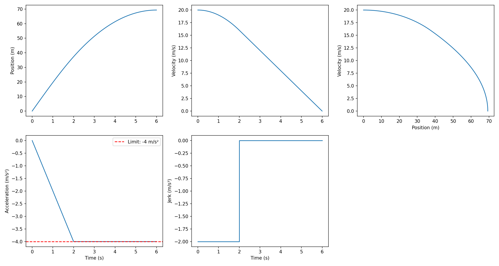

Decel-limited Constant-jerk Stopping Profile
Problem
Calculate the stopping distance of a vehicle under constant negative jerk with deceleration limits.
Given Parameters
- Initial position: \(s_0\)
- Initial velocity: \(v_0\)
- Initial acceleration: \(a_0\)
- Constant jerk: \(j\) (negative for braking)
- Minimum acceleration: \(a_{min}\) (optional limit)
Solution
Kinematic Equations
With constant jerk \(j\):
- Acceleration: \(a(t) = a_0 + jt\)
- Velocity: \(v(t) = v_0 + a_0 t + \frac{1}{2}jt^2\)
- Position: \(s(t) = s_0 + v_0 t + \frac{1}{2}a_0 t^2 + \frac{1}{6}jt^3\)
Stopping Time
Vehicle stops when \(v(t) = 0\):
\begin{equation} v_0 + a_0 t + \frac{1}{2}jt^2 = 0 \end{equation}Using the quadratic formula:
\begin{equation} t_{stop} = \frac{-a_0 - \sqrt{a_0^2 - 2jv_0}}{j} \end{equation}Stopping Distance
Substitute \(t_{stop}\) into position equation:
\begin{equation} d_{stop} = v_0 t + \frac{1}{2}a_0 t^2 + \frac{1}{6}jt^3 \end{equation}With Acceleration Limit
If \(a_{min}\) is specified and reached before stopping:
Phase 1 (jerk phase) - Time to reach limit:
\begin{equation} t_1 = \frac{a_{min} - a_0}{j} \end{equation}Phase 2 (constant acceleration) - Time at limit:
\begin{equation} t_2 = -\frac{v_1}{a_{min}} \end{equation}where \(v_1\) is velocity at end of phase 1.
Total stopping distance: \(d_{stop} = d_1 + d_2\)
Implementation
import math import matplotlib.pyplot as plt import numpy as np def stopping_distance(s0, v0, a0, j, a_min=None): """ Calculate stopping distance with constant negative jerk. Args: s0: initial position v0: initial velocity a0: initial acceleration j: jerk (negative for braking) a_min: minimum acceleration limit (optional) Returns: (stopping_time, stopping_distance) """ if a_min is None: # No acceleration limit discriminant = a0**2 - 2*j*v0 t_stop = (-a0 - math.sqrt(discriminant)) / j d_stop = v0*t_stop + 0.5*a0*t_stop**2 + (1/6)*j*t_stop**3 return t_stop, d_stop # Time to reach acceleration limit t1 = (a_min - a0) / j a1 = a0 + j*t1 v1 = v0 + a0*t1 + 0.5*j*t1**2 d1 = v0*t1 + 0.5*a0*t1**2 + (1/6)*j*t1**3 if v1 <= 0: # Stops before reaching limit discriminant = a0**2 - 2*j*v0 t_stop = (-a0 - math.sqrt(discriminant)) / j d_stop = v0*t_stop + 0.5*a0*t_stop**2 + (1/6)*j*t_stop**3 return t_stop, d_stop # Constant acceleration phase t2 = -v1 / a_min d2 = v1*t2 + 0.5*a_min*t2**2 return t1 + t2, d1 + d2 # Example if __name__ == "__main__": s0, v0, a0, j, a_min = 0, 20, 0, -2, -4 t, d = stopping_distance(s0, v0, a0, j, a_min) print(f"Stopping time: {t:.3f} s") print(f"Stopping distance: {d:.3f} m") # Plot t1 = (a_min - a0) / j v1 = v0 + a0*t1 + 0.5*j*t1**2 if v1 > 0: time1 = np.linspace(0, t1, 50) time2 = np.linspace(t1, t, 50) time = np.concatenate([time1, time2]) jerk = np.concatenate([np.full_like(time1, j), np.zeros_like(time2)]) accel = np.concatenate([a0 + j*time1, np.full_like(time2, a_min)]) vel1 = v0 + a0*time1 + 0.5*j*time1**2 v1_val = v0 + a0*t1 + 0.5*j*t1**2 vel2 = v1_val + a_min*(time2 - t1) vel = np.concatenate([vel1, vel2]) pos1 = s0 + v0*time1 + 0.5*a0*time1**2 + (1/6)*j*time1**3 d1 = v0*t1 + 0.5*a0*t1**2 + (1/6)*j*t1**3 pos2 = d1 + v1_val*(time2 - t1) + 0.5*a_min*(time2 - t1)**2 pos = np.concatenate([pos1, pos2]) else: time = np.linspace(0, t, 100) jerk = np.full_like(time, j) accel = a0 + j*time vel = v0 + a0*time + 0.5*j*time**2 pos = s0 + v0*time + 0.5*a0*time**2 + (1/6)*j*time**3 fig, axes = plt.subplots(2, 3, figsize=(15, 8)) axes[0,0].plot(time, pos) axes[0,0].set_ylabel('Position (m)') axes[0,1].plot(time, vel) axes[0,1].set_ylabel('Velocity (m/s)') axes[0,2].plot(pos, vel) axes[0,2].set_xlabel('Position (m)') axes[0,2].set_ylabel('Velocity (m/s)') axes[1,0].plot(time, accel) axes[1,0].axhline(a_min, color='r', linestyle='--', label=f'Limit: {a_min} m/s²') axes[1,0].set_ylabel('Acceleration (m/s²)') axes[1,0].set_xlabel('Time (s)') axes[1,0].legend() axes[1,1].plot(time, jerk) axes[1,1].set_ylabel('Jerk (m/s³)') axes[1,1].set_xlabel('Time (s)') axes[1,2].axis('off') plt.tight_layout() plt.savefig('stopping_profile.png', dpi=150) print("\nPlot saved to stopping_profile.png")
Example Results
Without Acceleration Limit
Initial conditions:
- \(v_0 = 20\) m/s
- \(a_0 = 0\) m/s²
- \(j = -2\) m/s³
Results:
- Stopping time: 4.472 s
- Stopping distance: 59.628 m
With Acceleration Limit
Initial conditions:
- \(v_0 = 20\) m/s
- \(a_0 = 0\) m/s²
- \(j = -2\) m/s³
- \(a_{min} = -4\) m/s²
Results:
- Stopping time: 6.000 s
Stopping distance: 69.333 m

Figure 1: constant jerk stopping profile